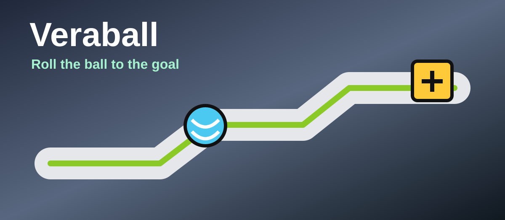

Slow down
Use small movements near edges.
Veraball
Veraball is a free/libre open-source rolling ball game for Windows and Linux.
Download Veraball
Basics
Rolling
Use small movements near edges.
Approach ramps straight for cleaner jumps.
Rolling games reward smooth control.